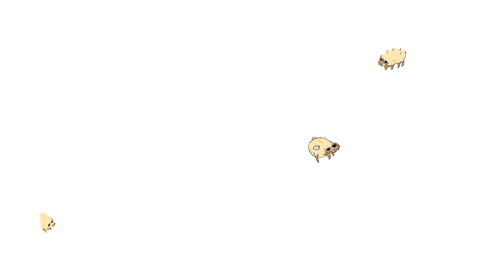
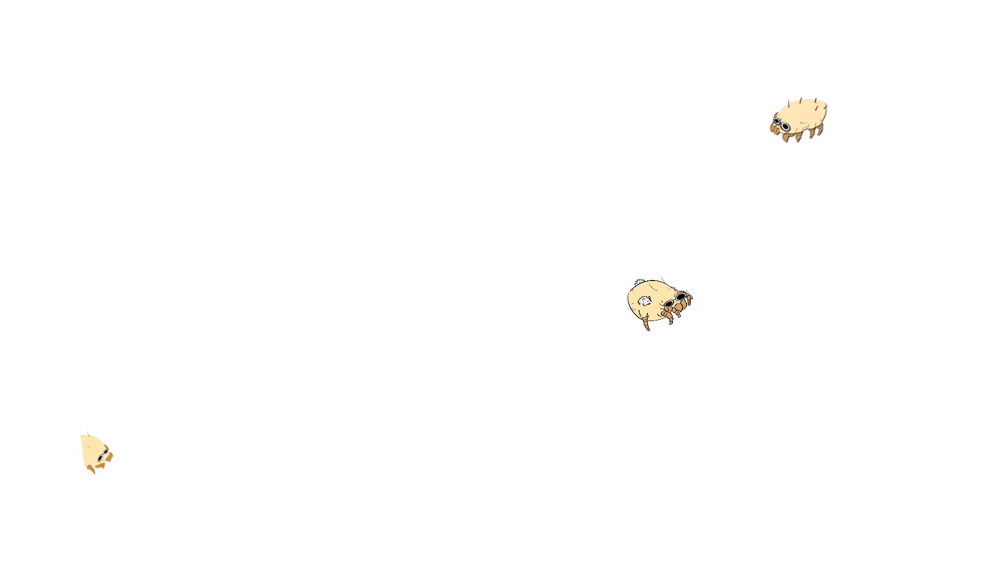
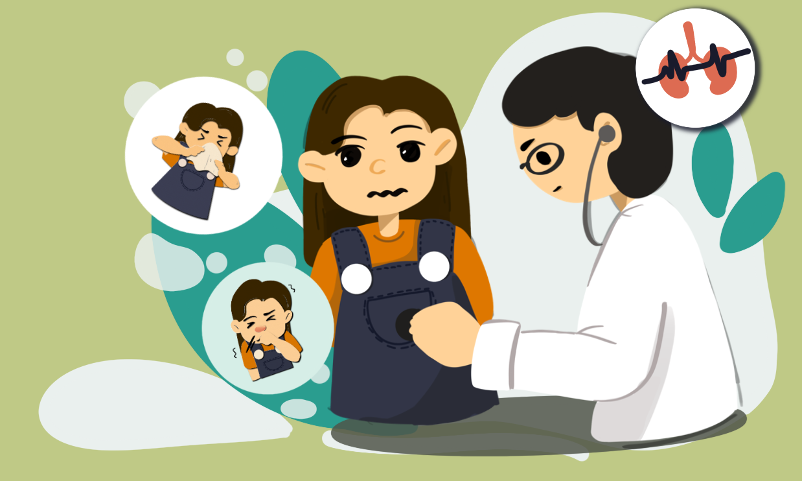

2. การตรวจร่างกาย
อาการแสดงจะสัมพันธ์กับโรคที่ผู้ป่วยเป็นอยู่ เช่น ผู้ป่วยโรคจมูกอักเสบจะมีอาการคัดแน่นจมูก น้ำมูกไหล ซึ่งเกิดจากภาวะอักเสบในโพรงจมูก ทำให้ตรวจพบโพรงจมูกบวมและซีดได้ ในผู้ป่วยโรคหืดแพทย์จะตรวจพบเสียงหายใจในปอดที่ผิดปกติ